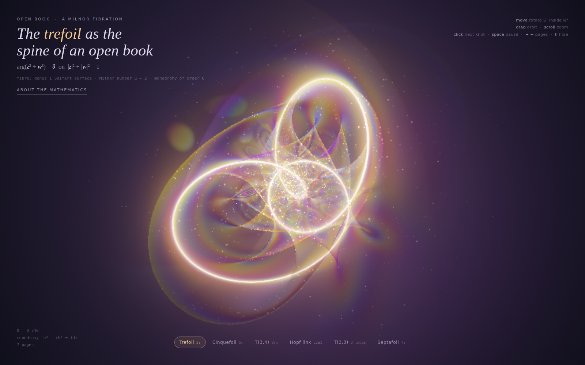
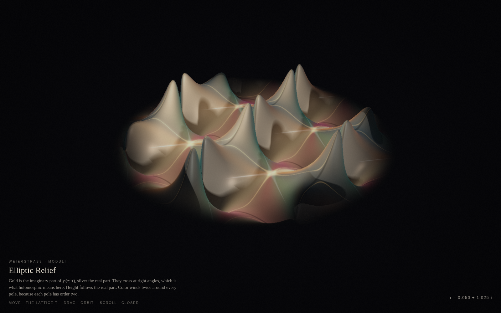
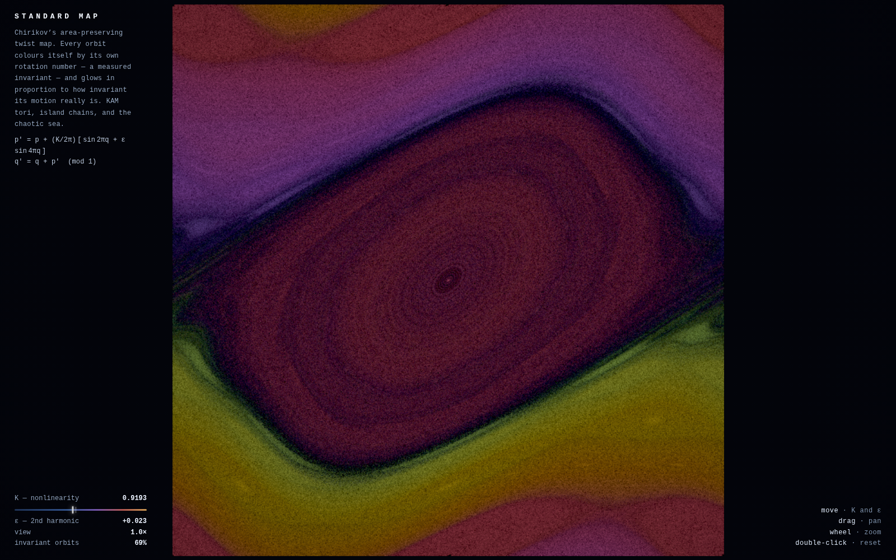
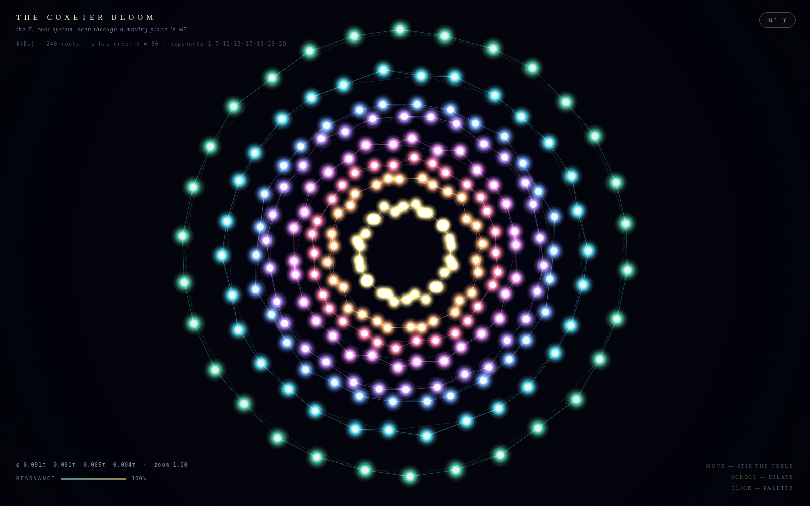
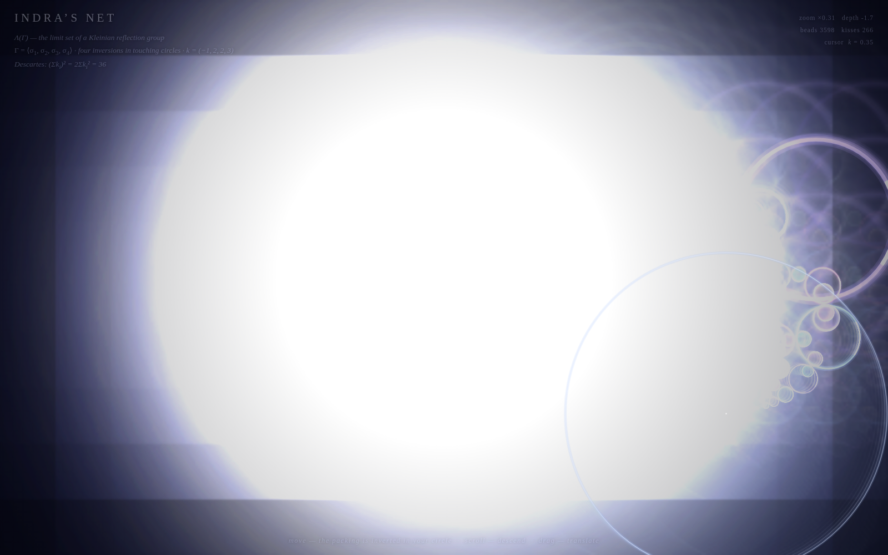
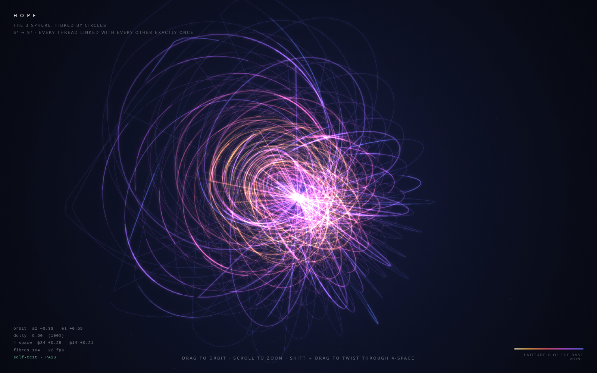

Open01Claude Opus 5.5218k output tokens
Open Book
A Milnor open book. The trefoil is the spine; the pages are soap-film surfaces turning around the knot in the 3-sphere.
opus5-5_218k.html

Open02Grok 4.7194k output tokens
Elliptic Relief
The Weierstrass ℘ function on a moving period lattice. Gold is the imaginary part, silver the real; height follows the real part, and the color winds twice at every pole.
grok4-7_194k.html

Open03DeepSeek v4.1 Flash359k output tokens
Standard Map
Chirikov’s area-preserving twist map. Every orbit is colored by its own rotation number, so the KAM tori, the island chains, and the chaotic sea separate themselves.
ds-4.1-flash_359k.html

Open04GLM 5.3 Flash146k output tokens
The Coxeter Bloom
The 240 roots of E₈, seen through a moving 2-plane in eight dimensions. On the Coxeter plane they fall into eight concentric 30-gons.
glm-5.3-flash_146k.html

Open05MiMo-V2.6-Pro216k output tokens
Indra’s Net
The limit set of a Kleinian reflection group: four inversions in mutually tangent circles, descended by scrolling into the packing.
mimo-pro_216k.html

Open06MiMo-V2.6-Flash182k output tokens
Hopf
The Hopf fibration. Circles that are linked inside the 3-sphere, drawn where the projection meets the screen.
mimo-2.6-flash_182k.html